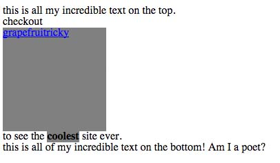

Today I want to talk to you about the different between the display:inline and display: inline-block elements in CSS.
First, to understand this, it's important to understand the different between an inline element and a block element. In CSS most elements defualt to being one or the other. An example of a block element is 'div', while inline elements are things like 'a' (the anchor or link element), 'b' (the bold element), or 'em' (the emphasis or italics element). When something is inline then it's typically used within text on a page. Given the examples, this makes sense; you would want your links or bolded words to appear inline witht he surrouding text. Here's a visual example of what I mean:
You can see that my link and my bolded text are staying inline with the rest of the text. I'm now going to shade these with a background color so you can really see the space that these elements are taking up:
The background color gives us a pretty good idea of how much space the element is taking up. As we can see, these inline elements just take up the space of the word. By default, CSS won't let us adjust the height or width of inline elements:
Again, this makes sense because we typically want these inline items to be grouped with our text, but there could be cases when we want to space them out.
Block elements differ because they allow you to adjust the height:
Now that we understand the difference between inline and block elements, we can move forward. The next thing that's important to know is that CSS allows you to change whether an element is inline or block (or inline-block) with the 'display' property. So, if I wanted to adjust the width and height of my link, I could:

As you see, this brings my link to a different line. If I wanted to, I could keep it on the same line with the 'display: inline-block' css property:

This is often used if people want to make grids of things on a site. You could use it to put multiple blocks next to each other and they page neatly when they hit the edge of the body or parent element.
I hope you enjoyed this, and keep an eye out for more technical tips!
Archive